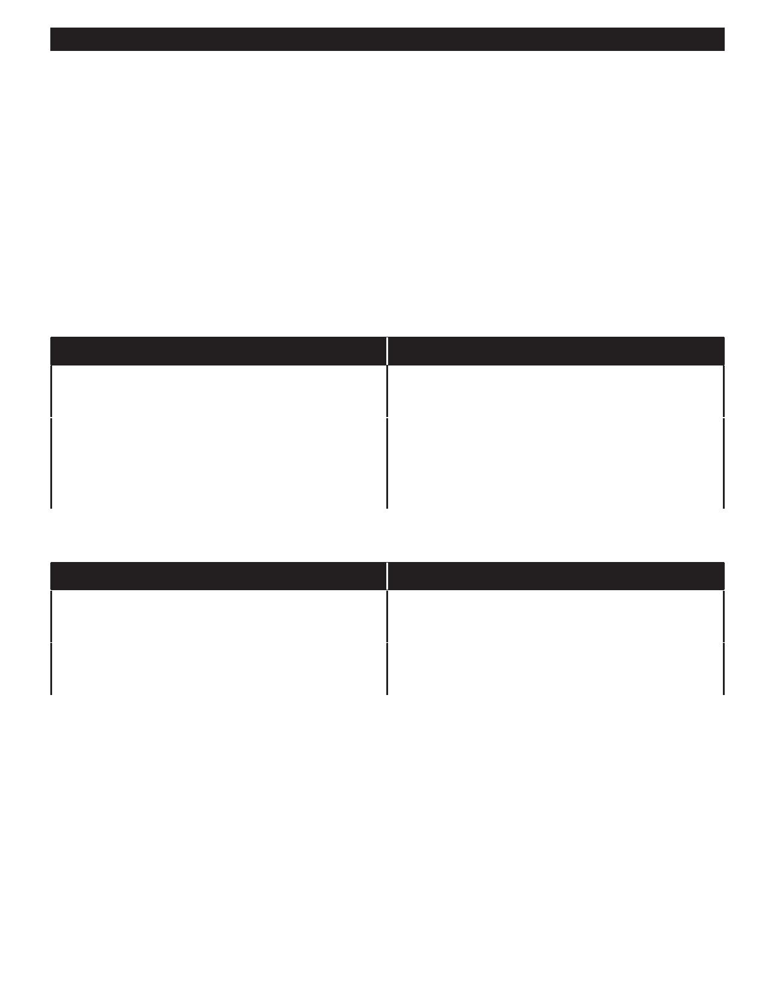

PA RT I C I PA N T R E S O U R C E G U I D E
Common Problems and Solutions
“Jiggle the handle!” It’s a common command in many homes—even those of experienced
maintenance technicians.
When it comes to toilets, flushing and “running” seem to be two of the most common
issues. Why else would there be rows of toilet fix-it parts at most hardware stores?
To take care of these two issues, and other toilet plumbing problems, start with the chart
that follows.
Toilet Handles
Problem
Solution(s)
Stiff or sticking handle.
Clean handle and adjust connections. (Pages 57 – 58.)
Adjust chain. (Page 59.)
Loose handle.
Adjust connections. (Pages 57 – 58.)
Adjust chain. (May need to put chain back on if it came
off.) (Page 59.)
Note: It is often cheaper and faster to replace the handle.
Flushing
Problem
Solution(s)
Toilet does not flush.
Check that shut-off valve is open (turned on).
Adjust chain. (Page 59.)
Partial flush.
Adjust chain. (Page 59.)
Adjust tank water level (Page 60.)
55